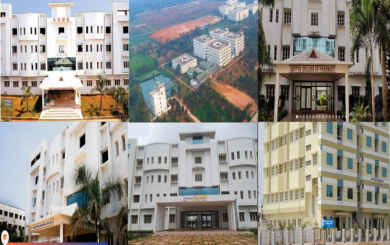

HOME
CONTACTS
SERVICES
about
Aditya, the premier promoter of quality education in the coastal districts of Andhra Pradesh for the past two decades, leads various institutions ranging from K.G to P.G besides professional colleges like Engineering, Pharmacy and Nursing. Sri Nallamilli Seshareddy as a founder, chairman, promoted the educational society in the name and style of Aditya Academy at Kakinada in the year 1984, with a vision and mission to create a platform for holistic growth and success to students at all levels.
